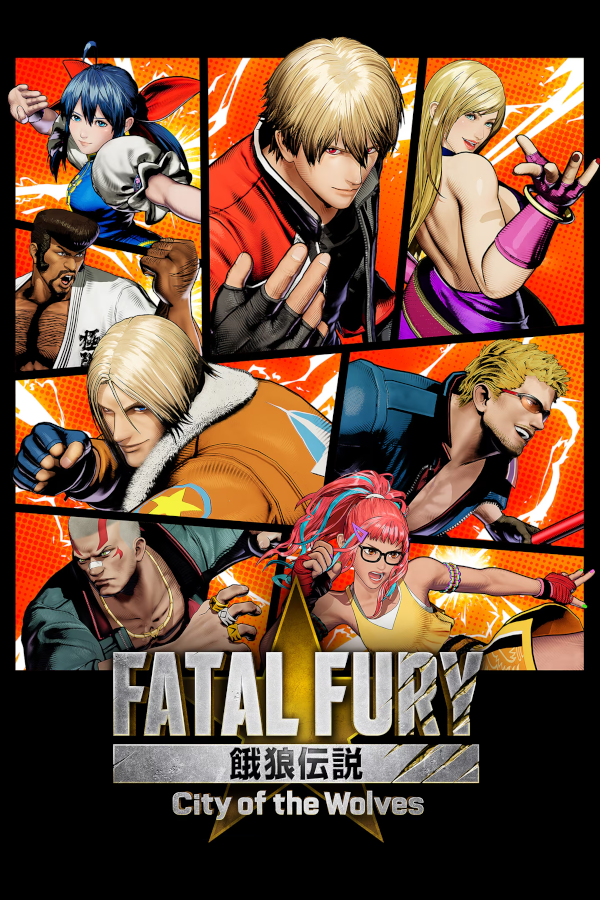

Fatal Fury: City of the Wolves
Every archived year-end list appearance, including placement and points earned.
About the Game
SNK’s beloved Fatal Fury series first hit the market in 1991, spearheading the fighting game boom of the 1990s that swept the industry thereafter. GAROU: MARK OF THE WOLVES (released in 1999) has, for some time, served as the franchise’s most recent installment. But that is all about to change: 26 years on, a brand-new entry—FATAL FURY: City of the Wolves—is set to arrive on the scene!■All-new REV System supercharges the excitement!Introducing the REV System, a brand-new toolset that offers unique offensive options from the moment the battle begins! Use REV Arts, REV Accel, REV Blows (while S.P.G. is active), and more until you hit your limit and the REV Meter overheats. The all-new REV System—fight at full throttle and supercharge the excitement! ■Two control schemes—fun for newcomers and veterans alike! Choose from two control schemes: Arcade Style is based on precise, technical inputs, while Smart Style lets you perform flashy special moves and combos using directional inputs and single button presses. From fighting game newcomers to seasoned veterans, there’s plenty of fun and excitement to be had—tailored specifically to your level! ■Memorable fighters from far and wide descend on the streets of South Town!The action kicks off with a total of 22 characters: a diverse 17-member roster of familiar faces and new blood, plus five DLC fighters in Season Pass 1. Every character is vibrantly presented in CotW's unique art style, which is guaranteed to stimulate the senses.■Strive for supremacy in EPISODES OF SOUTH TOWN, a single-player RPG mode! Introducing “Episodes of South Town” (EOST)—a solo RPG adventure where you’ll square up against contenders under various fight conditions, earning XP and other rewards for your efforts. Level up your fighter, build out a diverse kit of skills, and dominate the opposition on your way to the top. Dreams and ambitions run rampant in South Town; now is the time to chase the city’s crown and carve a legend all of your own!* To play EOST you’ll first need to connect to the Internet and update the game.
| Released | 2025-04-24 |
|---|---|
| Developer | SNK |
| Publisher | SNK |
| Genres | Action |
| Platforms | PC, PlayStation 5 |
SingleplayerSteam AchievementsMultiplayerFull controller supportSteam Cloud2DFunnyClassicControllerPvPAnimeCross-Platform Multiplayer
Where to Buy
Game information provided by RAWG.
Points by Year
List History
| Year | Source | List | Placement | Points |
|---|---|---|---|---|
| 2025 | GameSpot | The Best Games Of 2025 | Unranked | 1 |
| 2025 | NPR | The best games of 2025, picked by NPR's staff | Unranked | 1 |
| 2025 | Rolling Stone · Christopher Cruz | The 25 Best Video Games of 2025 | 17 | 3 |
| 2025 | Virgin Media O2 | The Best Video Games Of 2025 Revealed | Unranked | 3 |